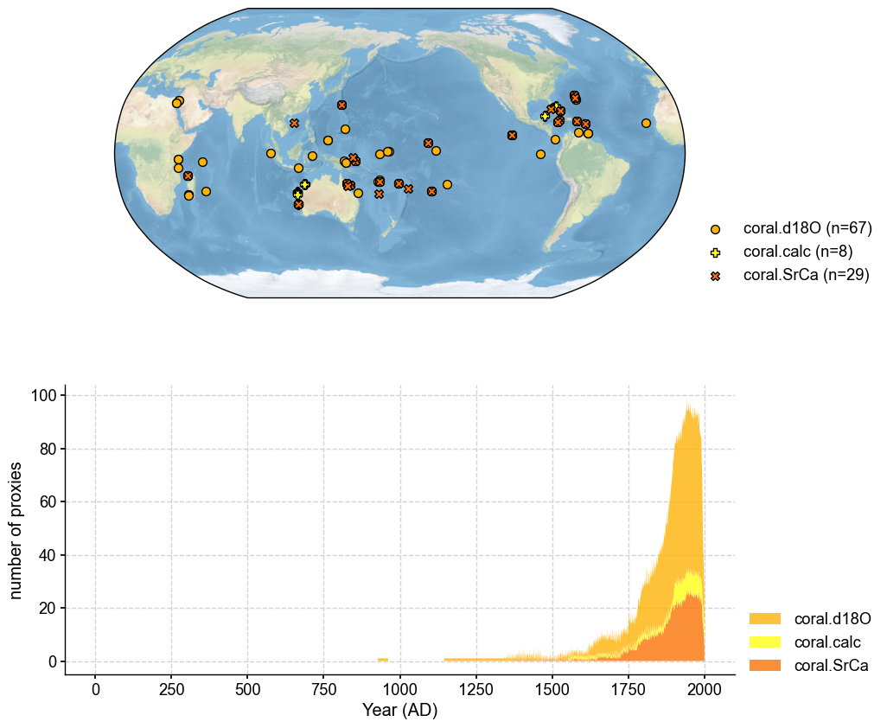
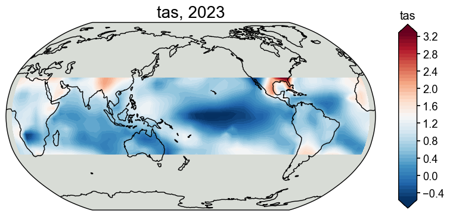

[1]:
%load_ext autoreload
%autoreload 2
import cfr
[2]:
job = cfr.ReconJob()
job.load_proxydb('PAGES2kv2')
[3]:
job.filter_proxydb(by='ptype', keys=['coral'])
fig, ax = job.proxydb.plot(plot_count=True)

[4]:
job.annualize_proxydb(months=[12, 1, 2], ptypes=['coral'])
Annualizing ProxyDatabase: 100%|██████████| 104/104 [00:02<00:00, 38.47it/s]
[5]:
job.center_proxydb(verbose=True)
>>> job.configs["proxydb_center_ref_period"] = [1951, 1980]
Centering each of the ProxyRecord: 0%| | 0/104 [00:00<?, ?it/s]/Users/fengzhu/Apps/miniconda3/envs/cfr-env/lib/python3.9/site-packages/numpy/core/fromnumeric.py:3432: RuntimeWarning: Mean of empty slice.
return _methods._mean(a, axis=axis, dtype=dtype,
/Users/fengzhu/Apps/miniconda3/envs/cfr-env/lib/python3.9/site-packages/numpy/core/_methods.py:190: RuntimeWarning: invalid value encountered in double_scalars
ret = ret.dtype.type(ret / rcount)
Centering each of the ProxyRecord: 100%|██████████| 104/104 [00:00<00:00, 9048.26it/s]
>>> job.proxydb updated
[6]:
job.load_clim(
tag='prior',
path_dict={
'tas': 'iCESM_past1000historical/tas',
},
anom_period=(1951, 1980),
)
>>> The target file seems existed at: ./data/tas_sfc_Amon_iCESM_past1000historical_085001-200512.nc . Loading from it instead of downloading ...
[7]:
job.load_clim(
tag='obs',
path_dict={
'tas': 'gistemp1200_GHCNv4_ERSSTv5',
},
rename_dict={'tas': 'tempanomaly'},
anom_period=(1951, 1980),
verbose=True,
)
>>> job.configs["obs_path"] = {'tas': 'gistemp1200_GHCNv4_ERSSTv5'}
>>> job.configs["obs_rename_dict"] = {'tas': 'tempanomaly'}
>>> job.configs["obs_anom_period"] = [1951, 1980]
>>> job.configs["obs_lat_name"] = lat
>>> job.configs["obs_lon_name"] = lon
>>> job.configs["obs_time_name"] = time
>>> The target file seems existed at: ./data/gistemp1200_GHCNv4_ERSSTv5.nc.gz . Loading from it instead of downloading ...
>>> obs variables ['tas'] loaded
>>> job.obs created
[8]:
job.annualize_clim(tag='prior', months=[12, 1, 2], verbose=True)
job.regrid_clim(tag='prior', nlat=42, nlon=63, verbose=True)
job.crop_clim(tag='prior', lat_min=-35, lat_max=35, verbose=True)
>>> job.configs["prior_annualize_months"] = [12, 1, 2]
>>> Processing tas ...
>>> job.prior updated
>>> job.configs["prior_regrid_nlat"] = 42
>>> job.configs["prior_regrid_nlon"] = 63
>>> Processing tas ...
>>> job.configs["prior_lat_min"] = -35
>>> job.configs["prior_lat_max"] = 35
>>> job.configs["prior_lon_min"] = 0
>>> job.configs["prior_lon_max"] = 360
>>> Processing tas ...
[9]:
job.annualize_clim(tag='obs', months=[12, 1, 2], verbose=True)
job.regrid_clim(tag='obs', nlat=42, nlon=63, verbose=True)
job.crop_clim(tag='obs', lat_min=-35, lat_max=35, verbose=True)
fig, ax = job.obs['tas'][-1].plot()
>>> job.configs["obs_annualize_months"] = [12, 1, 2]
>>> Processing tas ...
>>> job.obs updated
>>> job.configs["obs_regrid_nlat"] = 42
>>> job.configs["obs_regrid_nlon"] = 63
>>> Processing tas ...
>>> job.configs["prior_lat_min"] = -35
>>> job.configs["prior_lat_max"] = 35
>>> Processing tas ...

[10]:
job.prep_graphem(
recon_period=(1801, 2000), # period to reconstruct
calib_period=(1901, 2000), # period for calibration
verbose=True,
)
>>> job.configs["recon_period"] = [1801, 2000]
>>> job.configs["recon_timescale"] = 1
>>> job.configs["calib_period"] = [1901, 2000]
>>> job.graphem_params["recon_time"] created
>>> job.graphem_params["calib_time"] created
>>> job.graphem_params["field_obs"] created
>>> job.graphem_params["calib_idx"] created
>>> job.graphem_params["field"] created
>>> job.graphem_params["df_proxy"] created
>>> job.graphem_params["proxy"] created
>>> job.graphem_params["lonlat"] created
[ ]:
%%time
job.run_graphem(
save_dirpath='./recons/graphem-real-pages2k',
graph_method='neighborhood',
cutoff_radius=1500,
verbose=True,
)
[ ]:
res = cfr.ReconRes('./recons/graphem-real-pages2k')
res.load(['nino3.4', 'tas'], verbose=True)
[ ]:
target = cfr.ClimateField().fetch('20CRv3/tas', vn='air').rename('tas').get_anom((1951, 1980))
[ ]:
target = target.annualize(months=[12, 1, 2]).crop(lat_min=-35, lat_max=35)
target.da
[ ]:
# validate the reconstruction against 20CR
stat = 'corr'
valid_fd = res.recons['tas'].compare(
target, stat=stat,
timespan=(1874, 1900),
)
valid_fd.plot_kwargs.update({'cbar_orientation': 'horizontal', 'cbar_pad': 0.1})
fig, ax = valid_fd.plot(
title=f'{stat}(recon, obs), mean={valid_fd.geo_mean().value[0,0]:.2f}',
projection='PlateCarree',
latlon_range=(-32, 32, 0, 360),
plot_cbar=True,
plot_proxydb=True, proxydb=job.proxydb,
proxydb_lgd_kws={'loc': 'lower left', 'bbox_to_anchor': (1, 0)},
)
cfr.showfig(fig)
cfr.savefig(fig, f'./figs/graphem_{stat}_recon_obs.pdf')
[ ]:
target_nino34 = target.index('nino3.4')
[ ]:
bc09 = cfr.EnsTS().fetch('BC09_NINO34')
bc09_ann = bc09.annualize(months=[12, 1, 2])
fig, ax = bc09_ann.plot()
target_nino34.plot(ax=ax, color='k')
[ ]:
fig, ax = res.recons['nino3.4'].compare(bc09_ann, timespan=(1874, 1900)).plot_qs()
ax.set_xlim(1800, 2000)
ax.set_ylim(-3, 4)
ax.set_ylabel('NINO3.4 [K]')
cfr.showfig(fig)
cfr.savefig(fig, f'./figs/graphem_corr_recon_BC09.pdf')
[12]:
inst = job.graphem_params['calib_idx']
G_L = cfr.graphem.Graph(
lonlat = job.graphem_params['lonlat'],
# field = job.graphem_solver.field_r[inst],
field = job.prior['tas'].da.values[inst],
proxy = job.graphem_params['proxy'][inst,:])
G_L.glasso_adj(target_FF=3,target_FP=4)
---------------------------------------------------------------------------
ValueError Traceback (most recent call last)
Cell In[12], line 8
1 inst = job.graphem_params['calib_idx']
2 G_L = cfr.graphem.Graph(
3 lonlat = job.graphem_params['lonlat'],
4 # field = job.graphem_solver.field_r[inst],
5 field = job.prior['tas'].da.values[inst],
6 proxy = job.graphem_params['proxy'][inst,:])
----> 8 G_L.glasso_adj(target_FF=3,target_FP=4)
File ~/Github/cfr-graphem/graphem/graph.py:131, in Graph.glasso_adj(self, target_FF, target_FP)
101 def glasso_adj(self, target_FF, target_FP):
102 ''' Calculates the adjacency matrix using the Graphical LASSO.
103 Uses a QUIC solver and a greedy approach to find a graph
104 with a given target sparsity in the FF and FP parts of
(...)
129
130 '''
--> 131 adj, sp = graph_greedy_search(self.field, self.proxy, target_FF, target_FP)
132 self.adj = adj
133 self.sparsity = sp
File ~/Github/cfr-graphem/graphem/GraphEstimation.py:47, in graph_greedy_search(field_inst, proxy_inst, target_FF, target_FP, target_PP, N, maxit)
44 # TODO: ask Dominique to rewrite this for FF, FP search only.
46 if np.isnan(field_inst).any() or np.isnan(proxy_inst).any():
---> 47 raise ValueError("Error: this method requires the data matrices to be gap-free")
49 print("Solving graphical LASSO using greedy search")
51 X = np.hstack((field_inst, proxy_inst))
ValueError: Error: this method requires the data matrices to be gap-free
[ ]: